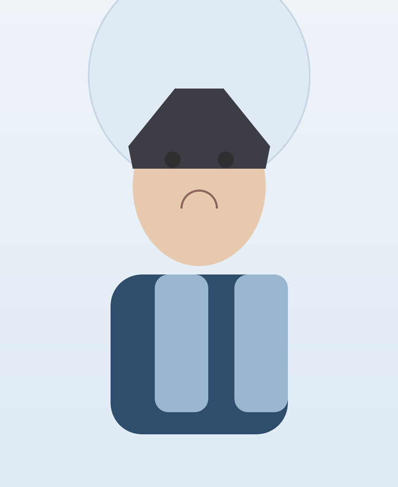

OpenStreetMap
Offene Karten, räumliche Datensätze und kollaborative Geoinformation für lokale und globale Projekte.
Ich arbeite an der Schnittstelle von räumlicher Analyse, Karten und nachhaltiger Forschung. Meine Leidenschaft liegt darin, komplexe Geodaten verständlich zu machen und mit klaren visuellen Erzählungen nutzbar zu gestalten.
In Studium und Praxis beschäftige ich mich mit raumbezogenen Fragestellungen, digitalen Karten und methodischer Arbeit mit Geo- und Umweltinformationen.

| Jahr | Station | Ort | Stichwort |
|---|---|---|---|
| 2018 | Abitur | Stuttgart | Grundlagen |
| 2019 | Praktikum | Berlin | GIS |
| 2020 | Studienstart | Mainz | Geoinformatik |
| 2022 | Projektarbeit | Freiburg | Fernerkundung |
| 2023 | Auslandsaufenthalt | Amsterdam | Urban Data |
| 2025 | Masterprojekt | Mainz | Raumanalysen |
Offene Karten, räumliche Datensätze und kollaborative Geoinformation für lokale und globale Projekte.

Erkundung von Landnutzung, Veränderung und räumlicher Dynamik mit Fernerkundungsdaten.

Analyse georeferenzierter Daten, räumliche Muster und digitale Karten für Entscheidungsprozesse.